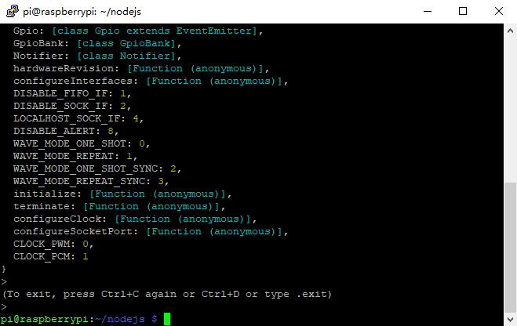

Nota
Ciao, benvenuto nella SunFounder Raspberry Pi & Arduino & ESP32 Enthusiasts Community su Facebook! Unisciti a noi per approfondire Raspberry Pi, Arduino e ESP32 insieme ad altri appassionati.
Perché unirsi a noi?
Supporto Esperto: Risolvi problemi post-vendita e sfide tecniche con l’aiuto della nostra community e del nostro team.
Impara e Condividi: Scambia suggerimenti e tutorial per migliorare le tue competenze.
Anteprime Esclusive: Accedi in anticipo agli annunci di nuovi prodotti e alle anteprime.
Sconti Speciali: Approfitta di sconti esclusivi sui nostri prodotti più recenti.
Promozioni e Omaggi Festivi: Partecipa a omaggi e promozioni per le festività.
👉 Pronto a esplorare e creare con noi? Clicca su [Qui] e unisciti oggi stesso!
Verifica di pigpio
pigpio è un modulo utilizzato per controllare i canali GPIO di Raspberry Pi. Questo pacchetto fornisce vari metodi per il controllo di GPIO su Raspberry Pi. Per esempi e documentazione, visita: https://www.npmjs.com/package/pigpio.
Inserisci il seguente comando per installare la libreria pigpio.
npm install pigpio
Verifica se la libreria è stata installata correttamente, cambia directory ed entra in nodejs:
cd ~/davinci-kit-for-raspberry-pi/nodejs
nodejs
Poi inserisci require(“pigpio”):
require('pigpio')
Se appare la schermata sopra, l’installazione della libreria è andata a buon fine.
Se vuoi uscire da node CLI, premi Ctrl+C due volte.
